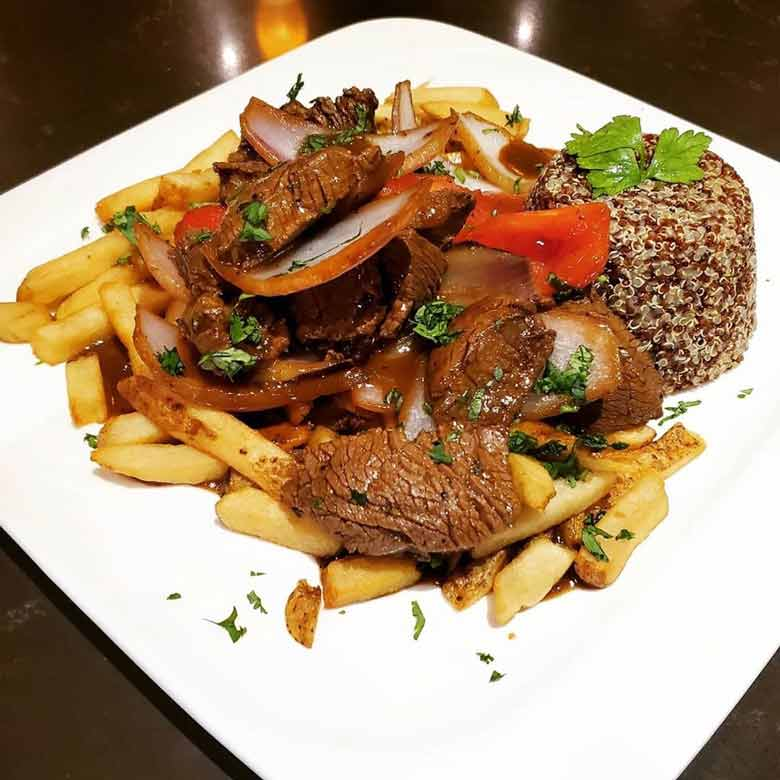

Lomo saltado

El lomo saltado es un plato típico de la gastronomía peruana, que fusiona las influencias criollas y asiáticas. Consiste en trozos de carne de res salteados con cebolla, tomate, ají amarillo y salsa de soja, acompañados de arroz blanco y papas fritas.
Es un plato muy popular y representativo de la cocina peruana, que se puede encontrar en casi todos los restaurantes del país. Su origen se remonta al siglo XIX, cuando los inmigrantes chinos llegaron a Perú y adaptaron sus técnicas culinarias a los ingredientes locales. El lomo saltado es una muestra de la diversidad y riqueza de la cultura peruana.
Ingredientes
- Carne de res
- Cebolla
- Ají amarillo
- Tomate
- Papas
- Arroz
- Salsa de soja
- Aceite de oliva
Preparación
- Cortar la carne de res en tiras finas y saltearla en un wok o una sartén grande con un poco de aceite de oliva. Reservar la carne y el jugo que suelte.
- Picar la cebolla y el ají amarillo. Saltearlos en el wok o sartén con un poco más de aceite, a fuego alto y removiendo constantemente.
- Añadir el tomate, la carne, la salsa de soja y el aceite de oliva. Mezclar bien todos los ingredientes y saltearlos a fuego alto durante unos minutos, hasta que la carne esté bien frita.
- Cortar las papas en rodajas y freírlas en una sartén con aceite de oliva. Servir el lomo saltado caliente, acompañado de arroz y papas fritas.